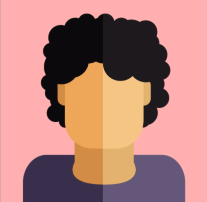

A.I.O.
All In One
All your social networks in one application
all
vk
tw
fb
tg
Designed by Freepik
Vlad Balobanof
Hey! We forgot Nikita!
Designed by Freepik
Kakayato Baba
Hi! I am from Japan.
Designed by Freepik

Andrey Makarof
Hey!
Combine news feed into one
"Shadow chat"
Break the context of your dialogue